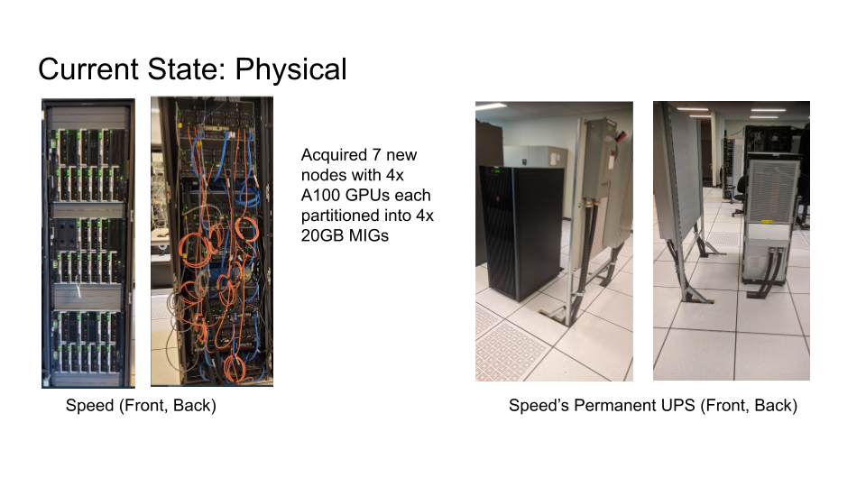
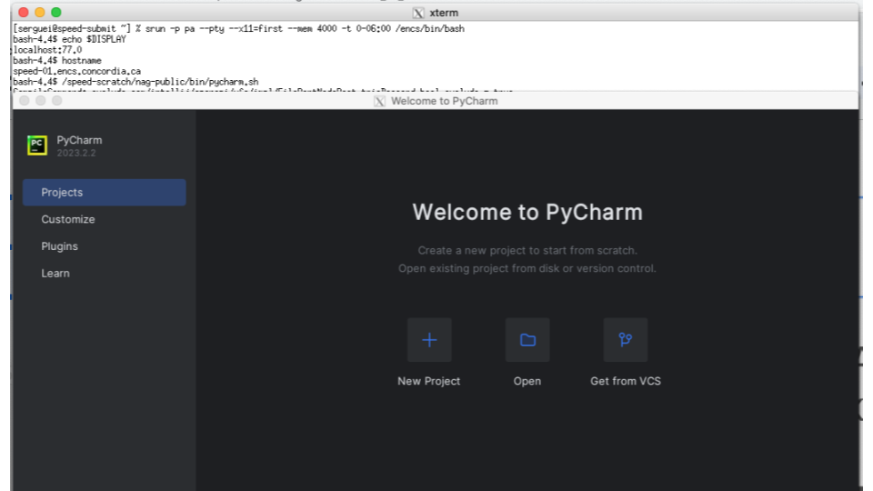

This document presents a quick start guide to the usage of the Gina Cody School of Engineering and Computer Science compute server farm called “Speed” – the GCS Speed cluster, managed by the HPC/NAG group of the Academic Information Technology Services (AITS) at GCS, Concordia University, Montreal, Canada.
This document contains basic information required to use “Speed” as well as tips and tricks, examples, and references to projects and papers that have used Speed. User contributions of sample jobs and/ or references are welcome. Details are sent to the hpc-ml mailing list.
Note: On October 20, 2023 with workshops prior, we have completed migration to SLURM (see Figure 2) from Grid Engine (UGE/AGE) as our job scheduler, so this manual has been ported to use SLURM’s syntax and commands. If you are a long-time GE user, see Appendix A.2 key highlights of the move needed to translate your GE jobs to SLURM as well as environment changes. These are also elaborated throughout this document and our examples as well in case you desire to re-read it.
If you wish to cite this work in your acknowledgements, you can use our general DOI found on our GitHub page https://dx.doi.org/10.5281/zenodo.5683642 or a specific version of the manual and scripts from that link individually.
Speed is supported by:
We receive support from the rest of AITS teams, such as NAG, SAG, FIS, and DOG.
https://www.concordia.ca/ginacody/aits.html

Prepare them for big clusters:
We have a great number of open-source software available and installed on “Speed” – various Python, CUDA versions, C++/Java compilers, OpenGL, OpenFOAM, OpenCV, TensorFlow, OpenMPI, OpenISS, MARF [24], etc. There are also a number of commercial packages, subject to licensing contributions, available, such as MATLAB [13, 23], Abaqus [1], Ansys, Fluent [2], etc.
To see the packages available, run ls -al /encs/pkg/ on speed.encs. In particular, there are over 2200 programs available in /encs/bin and /encs/pkg under Scientific Linux 7 (EL7). We are building an equivalent array of programs for the EL9 SPEED2 nodes.
Popular concrete examples:
A number of specific environments are available and can be loaded using the module command:
After reviewing the “What Speed is” (Section 1.4) and “What Speed is Not” (Section 1.5), request access to the “Speed” cluster by emailing: rt-ex-hpc AT encs.concordia.ca. GCS ENCS faculty and staff may request access directly. Students must include the following in their message:
Non-GCS faculty / students need to get a “sponsor” within GCS, such that your guest GCS ENCS account is created first. A sponsor can be any GCS Faculty member you collaborate with. Failing that, request the approval from our Dean’s Office; via our Associate Deans Drs. Eddie Hoi Ng or Emad Shihab. External entities to Concordia who collaborate with GCS Concordia researchers, should also go through the Dean’s office for approvals. Non-GCS students taking a GCS course do have their GCS ENCS account created automatically, but still need the course instructor’s approval to use the service.
In these instructions, anything bracketed like so, <>, indicates a label/value to be replaced (the entire bracketed term needs replacement). We use SLURM as the Workload Manager. It supports primarily two types of jobs: batch and interactive. Batch jobs are used to run unattended tasks.
TL;DR: Job instructions in a script start with #SBATCH prefix, for example:
#SBATCH --account=speed1 --mem=100M -t 600 -J job-name #SBATCH --gpus=2 --mail-type=ALL -t 600 --mail-user=YOUR_USERNAME
We use srun for every complex compute step inside the script. Use interactive jobs to set up virtual environments, compilation, and debugging. salloc is preferred; allows multiple steps. srun can start interactive jobs as well (see Section 2.8). Required and common job parameters: job-name (J), mail-type, mem, ntasks (n), cpus-per-task, account, -p (partition).
Before getting started, please review the “What Speed is” (Section 1.4) and “What Speed is Not” (Section 1.5). Once your GCS ENCS account has been granted access to “Speed”, use your GCS ENCS account credentials to create an SSH connection to speed (an alias for speed-submit.encs.concordia.ca). All users are expected to have a basic understanding of Linux and its commonly used commands (see Appendix B.1 for resources).
Requirements to create connections to Speed:
Open up a terminal window and type in the following SSH command being sure to replace <ENCSusername> with your ENCS account’s username.
ssh <ENCSusername>@speed.encs.concordia.ca
Read the AITS FAQ: How do I securely connect to a GCS server?
After creating an SSH connection to Speed, you will need to make sure the srun, sbatch, and salloc commands are available to you. Type the command name at the command prompt and press enter. If the command is not available, e.g., (“command not found”) is returned, you need to make sure your $PATH has /local/bin in it. To view your $PATH type echo $PATH at the prompt.
The next step is to copy a job template to your home directory and to set up your cluster-specific storage. Execute the following command from within your home directory. (To move to your home directory, type cd at the Linux prompt and press Enter.)
cp /home/n/nul-uge/template.sh . && mkdir /speed-scratch/$USER
Tip: the default shell for GCS ENCS users is tcsh. If you would like to use bash, please contact rt-ex-hpc AT encs.concordia.ca.
Note: If a “command not found” error appears after you log in to speed, your user account many have probably have defunct Grid Engine environment commands. See Appendix A.2 to learn how to prevent this error on login.
Preparing your job for submission is fairly straightforward. Start by basing your job script on one of the examples available in the src/ directory of our GitHub’s (https://github.com/NAG-DevOps/speed-hpc). Job scripts are broken into four main sections:
You can clone the tip of our repository to get the examples to start with or download them individually via a browser or command line:
git clone --depth=1 https://github.com/NAG-DevOps/speed-hpc.git cd speed-hpc/src
Then to quickly run some sample jobs, you can:
sbatch -p ps -t 10 bash.sh sbatch -p ps -t 10 env.sh sbatch -p ps -t 10 manual.sh sbatch -p pg -t 10 lambdal-singularity.sh
Directives are comments included at the beginning of a job script that set the shell and the options for the job scheduler. The shebang directive is always the first line of a script. In your job script, this directive sets which shell your script’s commands will run in. On “Speed”, we recommend that your script use a shell from the /encs/bin directory.
To use the tcsh shell, start your script with #!/encs/bin/tcsh. For bash, start with #!/encs/bin/bash. Directives that start with #SBATCH, set the options for the cluster’s Slurm job scheduler. The script template, template.sh, provides the essentials:
#SBATCH --job-name=<jobname> ## or -J. Give the job a name #SBATCH --mail-type=<type> ## Set type of email notifications #SBATCH --mail-user=<YOUR_USERNAME>@encs.concordia.ca #SBATCH --chdir=<directory> ## or -D, Set working directory where output files will go #SBATCH --nodes=1 ## or -N, Node count required for the job #SBATCH --ntasks=1 ## or -n, Number of tasks to be launched #SBATCH --cpus-per-task=<corecount> ## or -c, Core count requested, e.g. 8 cores #SBATCH --mem=<memory> ## Assign memory for this job, e.g., 32G memory per node
Replace the following to adjust the job script for your project(s)
Example with short option equivalents:
#SBATCH -J tmpdir ## Job’s name set to ’tmpdir’ #SBATCH --mail-type=ALL ## Receive all email type notifications #SBATCH --mail-user=a_user@encs.concordia.ca #SBATCH -D ./ ## Use current directory as working directory #SBATCH -N 1 ## Node count required for the job #SBATCH -n 1 ## Number of tasks to be launched #SBATCH -c 1 ## Request 8 cores #SBATCH --mem=32G ## Allocate 32G memory per node
If you are unsure about memory footprints, err on assigning a generous memory space to your job, so that it does not get prematurely terminated. You can refine --mem values for future jobs by monitoring the size of a job’s active memory space on speed-submit with:
sacct -j <jobID> sstat -j <jobID>
This can be customized to show specific columns:
sacct -o jobid,maxvmsize,ntasks%7,tresusageouttot%25 -j <jobID> sstat -o jobid,maxvmsize,ntasks%7,tresusageouttot%25 -j <jobID>
Memory-footprint values are also provided for completed jobs in the final e-mail notification as “maxvmsize”. Jobs that request a low-memory footprint are more likely to load on a busy cluster.
Other essential options are --time, or -t, and --account, or -A.
As your job will run on a compute or GPU “Speed” node, and not the submit node, any software that is needed must be loaded by the job script. Software is loaded within the script just as it would be from the command line.
To see a list of which modules are available, execute the following from the command line on speed-submit.
module avail
To list for a particular program (matlab, for example):
module -t avail matlab
Which, of course, can be shortened to match all that start with a particular letter:
module -t avail m
Insert the following in your script to load the matlab/R2020a) module:
module load matlab/R2020a/default
Use, unload, in place of, load, to remove a module from active use.
To list loaded modules:
module list
To purge all software in your working environment:
module purge
Typically, only the module load command will be used in your script.
The last part the job script is the scripting that will be executed by the job. This part of the job script includes all commands required to set up and execute the task your script has been written to do. Any Linux command can be used at this step. This section can be a simple call to an executable or a complex loop which iterates through a series of commands.
Any compute heavy step is preferably should be prefixed by srun as the best practice.
Every software program has a unique execution framework. It is the responsibility of the script’s author (e.g., you) to know what is required for the software used in your script by reviewing the software’s documentation. Regardless of which software your script calls, your script should be written so that the software knows the location of the input and output files as well as the degree of parallelism.
Jobs which touch data-input and data-output files more than once, should make use of TMPDIR, a scheduler-provided working space almost 1 TB in size. TMPDIR is created when a job starts, and exists on the local disk of the compute node executing your job. Using TMPDIR results in faster I/O operations than those to and from shared storage (which is provided over NFS).
An sample job script using TMPDIR is available at /home/n/nul-uge/templateTMPDIR.sh: the job is instructed to change to $TMPDIR, to make the new directory input, to copy data from $SLURM_SUBMIT_DIR/references/ to input/ ($SLURM_SUBMIT_DIR represents the current working directory), to make the new directory results, to execute the program (which takes input from $TMPDIR/input/ and writes output to $TMPDIR/results/), and finally to copy the total end results to an existing directory, processed, that is located in the current working directory. TMPDIR only exists for the duration of the job, though, so it is very important to copy relevant results from it at job’s end.
Now, let’s look at a basic job script, tcsh.sh in Figure 3 (you can copy it from our GitHub page or from /home/n/nul-uge).
#!/encs/bin/tcsh #SBATCH --job-name=tcsh-test #SBATCH --mem=1G sleep 30 module load gurobi/8.1.0 module list
The first line is the shell declaration (also know as a shebang) and sets the shell to tcsh. The lines that begin with #SBATCH are directives for the scheduler.
The script then:
The scheduler command, sbatch, is used to submit (non-interactive) jobs. From an ssh session on speed-submit, submit this job with sbatch ./tcsh.sh. You will see, "Submitted batch job 2653" where \(2653\) is a job ID assigned. The commands, squeue and sinfo can be used to look at the status of the cluster: squeue -l. You will see something like this:
[serguei@speed-submit src] % squeue -l Thu Oct 19 11:38:54 2023 JOBID PARTITION NAME USER STATE TIME TIME_LIMI NODES NODELIST(REASON) 2641 ps interact b_user RUNNING 19:16:09 1-00:00:00 1 speed-07 2652 ps interact a_user RUNNING 41:40 1-00:00:00 1 speed-07 2654 ps tcsh-tes serguei RUNNING 0:01 7-00:00:00 1 speed-07 [serguei@speed-submit src] % sinfo PARTITION AVAIL TIMELIMIT NODES STATE NODELIST ps* up 7-00:00:00 14 drain speed-[08-10,12,15-16,20-22,30-32,35-36] ps* up 7-00:00:00 1 mix speed-07 ps* up 7-00:00:00 7 idle speed-[11,19,23-24,29,33-34] pg up 1-00:00:00 1 drain speed-17 pg up 1-00:00:00 3 idle speed-[05,25,27] pt up 7-00:00:00 7 idle speed-[37-43] pa up 7-00:00:00 4 idle speed-[01,03,25,27]
Remember that you only have 30 seconds before the job is essentially over, so if you do not see a similar output, either adjust the sleep time in the script, or execute the sbatch statement more quickly. The squeue output listed above shows you that your job is running on node speed-07, that it has a job number of 2654, its time limit of 7 days, etc.
Once the job finishes, there will be a new file in the directory that the job was started from, with the syntax of, slurm-"job id".out, so in this example the file is, slurm-2654.out. This file represents the standard output (and error, if there is any) of the job in question. If you look at the contents of your newly created file, you will see that it contains the output of the, module list command. Important information is often written to this file.
Here are useful job-management commands:
sacct -j [job-ID]: get job stats. maxvmem is one of the more useful stats that you can elect to display as a format option.
% sacct -j 2654
JobID JobName Partition Account AllocCPUS State ExitCode
------------ ---------- ---------- ---------- ---------- ---------- --------
2654 tcsh-test ps speed1 1 COMPLETED 0:0
2654.batch batch speed1 1 COMPLETED 0:0
2654.extern extern speed1 1 COMPLETED 0:0
% sacct -j 2654 -o jobid,user,account,MaxVMSize,Reason%10,TRESUsageOutMax%30
JobID User Account MaxVMSize Reason TRESUsageOutMax
------------ --------- ---------- ---------- ---------- ----------------------
2654 serguei speed1 None
2654.batch speed1 296840K energy=0,fs/disk=1975
2654.extern speed1 296312K energy=0,fs/disk=343
See man sacct or sacct -e for details of the available formatting options. You can define your preferred default format in the SACCT_FORMAT environment variable in your .cshrc or .bashrc files.
seff [job-ID]: reports on the efficiency of a job’s cpu and memory utilization. Don’t execute it on RUNNING jobs (only on completed/finished jobs), efficiency statistics may be misleading.
If you define the following directives in your batch script, you will receive seff output in your email when your job is finished.
#SBATCH --mail-type=ALL
#SBATCH --mail-user=USER_NAME@encs.concordia.ca
## Replace USER_NAME with your encs username.
Output example:
Job ID: XXXXX
Cluster: speed
User/Group: user1/user1
State: COMPLETED (exit code 0)
Nodes: 1
Cores per node: 4
CPU Utilized: 00:04:29
CPU Efficiency: 0.35% of 21:32:20 core-walltime
Job Wall-clock time: 05:23:05
Memory Utilized: 2.90 GB
Memory Efficiency: 2.90% of 100.00 GB
In addition to the basic sbatch options presented earlier, there are a few additional options that are generally useful:
The many sbatch options available are read with, man sbatch. Also note that sbatch options can be specified during the job-submission command, and these override existing script options (if present). The syntax is, sbatch [options] PATHTOSCRIPT, but unlike in the script, the options are specified without the leading #SBATCH (e.g., sbatch -J sub-test --chdir=./ --mem=1G ./tcsh.sh).
Array jobs are those that start a batch job or a parallel job multiple times. Each iteration of the job array is called a task and receives a unique job ID. Only supported for batch jobs; submit time \(< 1\) second, compared to repeatedly submitting the same regular job over and over even from a script.
To submit an array job, use the --array option of the sbatch command as follows:
sbatch --array=n-m[:s]] <batch_script>
-t Option Syntax:
Examples:
Output files for Array Jobs:
The default and output and error-files are slurm-job_id_task_id.out. This means that Speed creates an output and an error-file for each task generated by the array-job as well as one for the super-ordinate array-job. To alter this behavior use the -o and -e option of sbatch.
For more details about Array Job options, please review the manual pages for sbatch by executing the following at the command line on speed-submit man sbatch.
For jobs that can take advantage of multiple machine cores, up to 32 cores (per job) can be requested in your script with:
#SBATCH -n [#cores for processes]
or
#SBATCH -n 1 #SBATCH -c [#cores for threads of a single process]
Both sbatch and salloc support -n on the command line, and it should always be used either in the script or on the command line as the default \(n=1\). Do not request more cores than you think will be useful, as larger-core jobs are more difficult to schedule. On the flip side, though, if you are going to be running a program that scales out to the maximum single-machine core count available, please (please) request 32 cores, to avoid node oversubscription (i.e., to avoid overloading the CPUs).
Important note about --ntasks or --ntasks-per-node (-n) talks about processes (usually the ones ran with srun). --cpus-per-task (-c) corresponds to threads per process. Some programs consider them equivalent, some don’t. Fluent for example uses --ntasks-per-node=8 and --cpus-per-task=1, some just set --cpus-per-task=8 and --ntasks-per-node=1. If one of them is not \(1\) then some applications need to be told to use \(n*c\) total cores.
Core count associated with a job appears under, “AllocCPUS”, in the, qacct -j, output.
[serguei@speed-submit src] % squeue -l Thu Oct 19 20:32:32 2023 JOBID PARTITION NAME USER STATE TIME TIME_LIMI NODES NODELIST(REASON) 2652 ps interact a_user RUNNING 9:35:18 1-00:00:00 1 speed-07 [serguei@speed-submit src] % sacct -j 2652 JobID JobName Partition Account AllocCPUS State ExitCode ------------ ---------- ---------- ---------- ---------- ---------- -------- 2652 interacti+ ps speed1 20 RUNNING 0:0 2652.intera+ interacti+ speed1 20 RUNNING 0:0 2652.extern extern speed1 20 RUNNING 0:0 2652.0 gydra_pmi+ speed1 20 COMPLETED 0:0 2652.1 gydra_pmi+ speed1 20 COMPLETED 0:0 2652.2 gydra_pmi+ speed1 20 FAILED 7:0 2652.3 gydra_pmi+ speed1 20 FAILED 7:0 2652.4 gydra_pmi+ speed1 20 COMPLETED 0:0 2652.5 gydra_pmi+ speed1 20 COMPLETED 0:0 2652.6 gydra_pmi+ speed1 20 COMPLETED 0:0 2652.7 gydra_pmi+ speed1 20 COMPLETED 0:0
Job sessions can be interactive, instead of batch (script) based. Such sessions can be useful for testing, debugging, and optimising code and resource requirements, conda or python virtual environments setup, or any likewise preparatory work prior to batch submission.
To request an interactive job session, use, salloc [options], similarly to a sbatch command-line job, e.g.,
salloc -J interactive-test --mem=1G -p ps -n 8
Inside the allocated salloc session you can run shell commands as usual; it is recommended to use srun for the heavy compute steps inside salloc. If it is a quick a short job just to compile something, e.g., on a GPU node you can use an interactive srun directly (note no srun can run within srun), e.g., a 1 hour allocation:
For tcsh:
srun --pty -n 8 -p pg --gpus=1 --mem=1Gb -t 60 /encs/bin/tcsh
For bash:
srun --pty -n 8 -p pg --gpus=1 --mem=1Gb -t 60 /encs/bin/bash
If you need to run an on-Speed graphical-based UI application (e.g., MALTLAB, Abaqus CME, etc.), or an IDE (PyCharm, VSCode, Eclipse) to develop and test your job’s code interactively you need to enable X11-forwarding from your client machine to speed then to the compute node. To do so:
you need to run an X server on your client machine, such as,
See https://www.concordia.ca/ginacody/aits/support/faq/xserver.html for details.
verify your X connection was properly forwarded by printing the DISPLAY variable:
echo $DISPLAY If it has no output, then your X forwarding is not on and you may need to re-login to Speed.
Use the --x11 with salloc or srun:
salloc ... --x11=first ...
While running under scheduler, create a run-user directory and set the variable XDG_RUNTIME_DIR.
mkdir -p /speed-scratch/$USER/run-dir
setenv XDG_RUNTIME_DIR /speed-scratch/$USER/run-dir
Launch your graphical application:
module load the required version, then matlab, or abaqus cme, etc.
Here’s an example of starting PyCharm (see Figure 4), of which we made a sample local
installation. You can make a similar install under your own directory. If using VSCode, it’s currently
only supported with the --no-sandbox option.
BASH version:
bash-3.2$ ssh -X speed (XQuartz xterm, PuTTY or MobaXterm have X11 forwarding too) serguei@speed’s password: [serguei@speed-submit ~] % echo $DISPLAY localhost:14.0 [serguei@speed-submit ~] % salloc -p ps --x11=first --mem=4Gb -t 0-06:00 bash-4.4$ echo $DISPLAY localhost:77.0 bash-4.4$ hostname speed-01.encs.concordia.ca bash-4.4$ export XDG_RUNTIME_DIR=/speed-scratch/$USER/run-dir bash-4.4$ /speed-scratch/nag-public/bin/pycharm.sh
TCSH version:
ssh -X speed (XQuartz xterm, PuTTY or MobaXterm have X11 forwarding too) [speed-submit] [/home/c/carlos] > echo $DISPLAY localhost:14.0 [speed-submit] [/home/c/carlos] > cd /speed-scratch/$USER [speed-submit] [/speed-scratch/carlos] > echo $DISPLAY localhost:13.0 [speed-submit] [/speed-scratch/carlos] > salloc -pps --x11=first --mem=4Gb -t 0-06:00 [speed-07] [/speed-scratch/carlos] > echo $DISPLAY localhost:42.0 [speed-07] [/speed-scratch/carlos] > hostname speed-07.encs.concordia.ca [speed-07] [/speed-scratch/carlos] > setenv XDG_RUNTIME_DIR /speed-scratch/$USER/run-dir [speed-07] [/speed-scratch/carlos] > /speed-scratch/nag-public/bin/pycharm.sh

This is an example of running Jupyter notebooks together with Singularity (more on Singularity see Section 2.16). Here we are using one of the OpenISS-derived containers (see Section 2.15.4 as well).
Execute this Singularity command on a single line. It’s best to save it in a shell script that you could call, since it’s long.
srun singularity exec -B $PWD\:/speed-pwd,/speed-scratch/$USER\:/my-speed-scratch,/nettemp \
--env SHELL=/bin/bash --nv /speed-scratch/nag-public/openiss-cuda-conda-jupyter.sif \
/bin/bash -c ’/opt/conda/bin/jupyter notebook --no-browser --notebook-dir=/speed-pwd \
--ip="*" --port=8888 --allow-root’
Create an ssh tunnel between your computer and the node (speed-XX) where Jupyter is running (Using speed-submit as a “jump server”) (Preferably: PuTTY, see Figure 5 and Figure 6)
ssh -L 8888:speed-XX:8888 YOUR_USER@speed-submit.encs.concordia.ca
Don’t close the tunnel.
Open a browser, and copy your Jupyter’s token, in the screenshot example in Figure 7; each time the token will be different, as it printed to you in the terminal.
http://localhost:8888/?token=5a52e6c0c7dfc111008a803e5303371ed0462d3d547ac3fb

This is an example of Jupyter Labs running in a Conda environment, with Pytorch
Environment preparation: for the FIRST time:
Set env. variables, conda environment, jupyter+pytorch installation
module load anaconda3/2023.03/default
setenv TMPDIR /speed-scratch/$USER/tmp
setenv TMP /speed-scratch/$USER/tmp
setenv CONDA_PKGS_DIRS /speed-scratch/$USER/Jupyter/pkgs
conda create -p /speed-scratch/$USER/Jupyter/jupyter-env
conda activate /speed-scratch/$USER/Jupyter/jupyter-env
conda install -c conda-forge jupyterlab
pip3 install torch torchvision torchaudio --index-url https://download.pytorch.org/whl/cu118
exit
Running Jupyter Labs, from speed-submit:
Open an Interactive session: salloc --mem=50G --gpus=1 -ppg (or -ppt)
cd /speed-scratch/$USER/Jupyter
module load anaconda3/2023.03/default
setenv TMPDIR /speed-scratch/$USER/tmp
setenv TMP /speed-scratch/$USER/tmp
setenv CONDA_PKGS_DIRS /speed-scratch/$USER/Jupyter/pkgs
conda activate /speed-scratch/$USER/Jupyter/jupyter-env
jupyter lab --no-browser --notebook-dir=$PWD --ip="*" --port=8888 --port-retries=50
This is an example of Jupyter Labs running in a Python Virtual environment (venv), with Pytorch
Environment preparation: for the FIRST time:
Create Python venv and install jupyterlab+pytorch
module load python/3.11.5/default
setenv TMPDIR /speed-scratch/$USER/tmp
setenv TMP /speed-scratch/$USER/tmp
setenv PIP_CACHE_DIR /speed-scratch/$USER/tmp/cache
python -m venv /speed-scratch/$USER/tmp/jupyter-venv
source /speed-scratch/$USER/tmp/jupyter-venv/bin/activate.csh
pip install jupyterlab
pip3 install torch torchvision torchaudio --index-url https://download.pytorch.org/whl/cu118
exit
Running Jupyter Labs, from speed-submit:
Open an Interactive session: salloc --mem=50G --gpus=1 --constraint=el9
cd /speed-scratch/$USER
module load python/3.11.5/default
setenv PIP_CACHE_DIR /speed-scratch/$USER/tmp/cache
source /speed-scratch/$USER/tmp/jupyter-venv/bin/activate.csh
jupyter lab --no-browser --notebook-dir=$PWD --ip="0.0.0.0" --port=8888 --port-retries=50
This is an example of running VScode, it’s similar to Jupyter notebooks, but it doesn’t use containers. This a Web version, it exists the local(workstation)-remote(speed-node) version too, but it is for Advanced users (no support, execute it at your own risk).
Environment preparation: for the FIRST time:
Running VScode
Run VScode, change the port if needed.
/speed-scratch/nag-public/code-server-4.22.1/bin/code-server --user-data-dir=$PWD\/projects \
--config=$PWD\/home/.config/code-server/config.yaml --bind-addr="0.0.0.0:8080" $PWD\/projects
If the browser asks for password:
cat /speed-scratch/$USER/vscode/home/.config/code-server/config.yaml

The scheduler presents a number of environment variables that can be used in your jobs. You can invoke env or printenv in your job to know what hose are (most begin with the prefix SLURM). Some of the more useful ones are:
See a more complete list here:
In Figure 9 is a sample script, using some of these.
#!/encs/bin/tcsh #SBATCH --job-name=tmpdir ## Give the job a name #SBATCH --mail-type=ALL ## Receive all email type notifications #SBATCH --mail-user=YOUR_USER_NAME@encs.concordia.ca #SBATCH --chdir=./ ## Use currect directory as working directory #SBATCH --nodes=1 #SBATCH --ntasks=1 #SBATCH --cpus-per-task=8 ## Request 8 cores #SBATCH --mem=32G ## Assign 32G memory per node cd $TMPDIR mkdir input rsync -av $SLURM_SUBMIT_DIR/references/ input/ mkdir results srun STAR --inFiles $TMPDIR/input --parallel $SRUN_CPUS_PER_TASK --outFiles $TMPDIR/results rsync -av $TMPDIR/results/ $SLURM_SUBMIT_DIR/processed/
Some programs effect their parallel processing via MPI (which is a communication protocol). An example of such software is Fluent. MPI needs to have ‘passwordless login’ set up, which means SSH keys. In your NFS-mounted home directory:
The following documentation is specific to the Speed HPC Facility at the Gina Cody School of Engineering and Computer Science. Virtual environments typically instantiated via Conda or Python. Another option is Singularity detailed in Section 2.16. Usually, virtual environments are created once during an interactive session before submitting a batch job to the scheduler. The job script submitted to the scheduler is then written to (1) activate the virtual environment, (2) use it, and (3) close it at the end of the job.
Request an interactive session in the queue you wish to submit your jobs to (e.g., salloc -p pg –gpus=1 for GPU jobs). Once your interactive has started, create an anaconda environment in your speed-scratch directory by using the prefix option when executing conda create. For example, to create an anaconda environment for a_user, execute the following at the command line:
module load anaconda3/2023.03/default conda create --prefix /speed-scratch/a_user/myconda
Note: Without the prefix option, the conda create command creates the environment in a_user’s home directory by default.
List Environments. To view your conda environments, type: conda info --envs
# conda environments: # base * /encs/pkg/anaconda3-2023.03/root /speed-scratch/a_user/myconda
Activate an Environment. Activate the environment speedscratcha_usermyconda as follows
conda activate /speed-scratch/a_user/myconda
After activating your environment, add pip to your environment by using
conda install pip
This will install pip and pip’s dependencies, including python, into the environment.
A consolidated example using Conda:
salloc -p pg --gpus=1 --mem=10GB -A <slurm account name>
cd /speed-scratch/$USER
module load python/3.11.0/default
conda create -p /speed-scratch/$USER/pytorch-env
conda activate /speed-scratch/$USER/pytorch-env
conda install python=3.11.0
pip3 install torch torchvision torchaudio --index-url \
https://download.pytorch.org/whl/cu117
....
conda deactivate
exit # end the salloc session
Important Note: pip (and pip3) are used to install modules from the python distribution while conda install installs modules from anaconda’s repository.
Setting up a Python virtual environment is fairly straightforward. The first step is to request an interactive session in the queue you wish to submit your jobs to.
We have a simple example that use a Python virtual environment:
Using Python Venv
salloc -p pg --gpus=1 --mem=10GB -A <slurm account name>
cd /speed-scratch/$USER
module load python/3.9.1/default
mkdir -p /speed-scratch/$USER/tmp
setenv TMPDIR /speed-scratch/$USER/tmp
setenv TMP /speed-scratch/$USER/tmp
python -m venv $TMPDIR/testenv (testenv=name of the virtualEnv)
source /speed-scratch/$USER/tmp/testenv/bin/activate.csh
pip install modules…
deactivate
exit
Important Note: partition ps is used for CPU jobs, partitions pg, pt are used for GPU jobs, no need to use --gpus= when preparing environments for CPU jobs.
#!/encs/bin/tcsh #SBATCH --job-name=flu10000 ## Give the job a name #SBATCH --mail-type=ALL ## Receive all email type notifications #SBATCH --mail-user=YOUR_USER_NAME@encs.concordia.ca #SBATCH --chdir=./ ## Use currect directory as working directory #SBATCH --nodes=1 ## Number of nodes to run on #SBATCH --ntasks-per-node=32 ## Number of cores #SBATCH --cpus-per-task=1 ## Number of MPI threads #SBATCH --mem=160G ## Assign 160G memory per node date module avail ansys module load ansys/19.2/default cd $TMPDIR set FLUENTNODES = "‘scontrol␣show␣hostnames‘" set FLUENTNODES = ‘echo $FLUENTNODES | tr ’ ’ ’,’‘ date srun fluent 3ddp \ -g -t$SLURM_NTASKS \ -g-cnf=$FLUENTNODES \ -i $SLURM_SUBMIT_DIR/fluentdata/info.jou > call.txt date srun rsync -av $TMPDIR/ $SLURM_SUBMIT_DIR/fluentparallel/ date
The job script in Figure 10 runs Fluent in parallel over 32 cores. Of note, we have requested e-mail notifications (--mail-type), are defining the parallel environment for, fluent, with, -t$SLURM_NTASKS and -g-cnf=$FLUENTNODES (very important), and are setting $TMPDIR as the in-job location for the “moment” rfile.out file (in-job, because the last line of the script copies everything from $TMPDIR to a directory in the user’s NFS-mounted home). Job progress can be monitored by examining the standard-out file (e.g., slurm-249.out), and/or by examining the “moment” file in /disk/nobackup/<yourjob> (hint: it starts with your job-ID) on the node running the job. Caveat: take care with journal-file file paths.
The following steps describing how to create an efficientdet environment on Speed, were submitted by a member of Dr. Amer’s research group.
Next
pip install tensorflow==2.7.0 pip install lxml>=4.6.1 pip install absl-py>=0.10.0 pip install matplotlib>=3.0.3 pip install numpy>=1.19.4 pip install Pillow>=6.0.0 pip install PyYAML>=5.1 pip install six>=1.15.0 pip install tensorflow-addons>=0.12 pip install tensorflow-hub>=0.11 pip install neural-structured-learning>=1.3.1 pip install tensorflow-model-optimization>=0.5 pip install Cython>=0.29.13 pip install git+https://github.com/cocodataset/cocoapi.git#subdirectory=PythonAPI
Jobs that call java have a memory overhead, which needs to be taken into account when assigning a value to --mem. Even the most basic java call, java -Xmx1G -version, will need to have, --mem=5G, with the 4-GB difference representing the memory overhead. Note that this memory overhead grows proportionally with the value of -Xmx. To give you an idea, when -Xmx has a value of 100G, --mem has to be at least 106G; for 200G, at least 211G; for 300G, at least 314G.
The primary cluster has two GPU nodes, each with six Tesla (CUDA-compatible) P6 cards: each card has 2048 cores and 16GB of RAM. Though note that the P6 is mainly a single-precision card, so unless you need the GPU double precision, double-precision calculations will be faster on a CPU node.
Job scripts for the GPU queue differ in that they need this statement, which attaches either a single GPU, or, two GPUs, to the job:
#SBATCH --gpus=[1|2]
Once that your job script is ready, you can submit it to the GPU partition (queue) with:
sbatch -p pg ./<myscript>.sh
And you can query nvidia-smi on the node that is running your job with:
ssh <username>@speed[-05|-17|37-43] nvidia-smi
Status of the GPU queue can be queried with:
sinfo -p pg --long --Node
Very important note regarding TensorFlow and PyTorch: if you are planning to run TensorFlow
and/or PyTorch multi-GPU jobs, do not use the tf.distribute and/or
torch.nn.DataParallel functions on speed-01,05,17, as they will crash the compute node (100%
certainty). This appears to be the current hardware’s architecture’s defect. The workaround is to
either manually effect GPU parallelisation (TensorFlow has an example on how to do this), or to run
on a single GPU.
Important
Users without permission to use the GPU nodes can submit jobs to the pg partition, but those jobs will hang and never run. Their availability is seen with:
[serguei@speed-submit src] % sinfo -p pg --long --Node Thu Oct 19 22:31:04 2023 NODELIST NODES PARTITION STATE CPUS S:C:T MEMORY TMP_DISK WEIGHT AVAIL_FE REASON speed-05 1 pg idle 32 2:16:1 515490 0 1 gpu16 none speed-17 1 pg drained 32 2:16:1 515490 0 1 gpu16 UGE speed-25 1 pg idle 32 2:16:1 257458 0 1 gpu32 none speed-27 1 pg idle 32 2:16:1 257458 0 1 gpu32 none [serguei@speed-submit src] % sinfo -p pt --long --Node Thu Oct 19 22:32:39 2023 NODELIST NODES PARTITION STATE CPUS S:C:T MEMORY TMP_DISK WEIGHT AVAIL_FE REASON speed-37 1 pt idle 256 2:64:2 980275 0 1 gpu20,mi none speed-38 1 pt idle 256 2:64:2 980275 0 1 gpu20,mi none speed-39 1 pt idle 256 2:64:2 980275 0 1 gpu20,mi none speed-40 1 pt idle 256 2:64:2 980275 0 1 gpu20,mi none speed-41 1 pt idle 256 2:64:2 980275 0 1 gpu20,mi none speed-42 1 pt idle 256 2:64:2 980275 0 1 gpu20,mi none speed-43 1 pt idle 256 2:64:2 980275 0 1 gpu20,mi none
This status demonstrates that most are available (i.e., have not been requested as resources). To specifically request a GPU node, add, --gpus=[#GPUs], to your sbatch (statement/script) or salloc (statement) request. For example, sbatch -t 10 --mem=1G --gpus=1 -p pg ./tcsh.sh. You will see that this job has been assigned to one of the GPU nodes.
[serguei@speed-submit src] % squeue -p pg -o "%15N %.6D %7P %.11T %.4c %.8z %.6m %.8d %.6w %.8f %20G %20E" NODELIST NODES PARTITI STATE MIN_ S:C:T MIN_ME MIN_TMP_ WCKEY FEATURES GROUP DEPENDENCY speed-05 1 pg RUNNING 1 *:*:* 1G 0 (null) (null) 11929 (null) [serguei@speed-submit src] % sinfo -p pg -o "%15N %.6D %7P %.11T %.4c %.8z %.6m %.8d %.6w %.8f %20G %20E" NODELIST NODES PARTITI STATE CPUS S:C:T MEMORY TMP_DISK WEIGHT AVAIL_FE GRES REASON speed-17 1 pg drained 32 2:16:1 515490 0 1 gpu16 gpu:6 UGE speed-05 1 pg mixed 32 2:16:1 515490 0 1 gpu16 gpu:6 none speed-[25,27] 2 pg idle 32 2:16:1 257458 0 1 gpu32 gpu:2 none
As described lines above, P6 cards are not compatible with Distribute and DataParallel functions (Pytorch, Tensorflow) when running on Multi-GPUs. One workaround is to run the job in Multi-node, single GPU per node; per example:
#SBATCH --nodes=2 #SBATCH --gpus-per-node=1
On P6 nodes: speed-05, speed-17, speed-01
The example: pytorch-multinode-multigpu.sh illustrates a job for training on Multi-nodes, Multi-GPUs
When calling CUDA within job scripts, it is important to create a link to the desired CUDA libraries and set the runtime link path to the same libraries. For example, to use the cuda-11.5 libraries, specify the following in your Makefile.
-L/encs/pkg/cuda-11.5/root/lib64 -Wl,-rpath,/encs/pkg/cuda-11.5/root/lib64
In your job script, specify the version of gcc to use prior to calling cuda. For example: module load gcc/8.4 or module load gcc/9.3
Interactive jobs (Section 2.8) must be submitted to the GPU partition in order to compile and link. We have several versions of CUDA installed in:
/encs/pkg/cuda-11.5/root/ /encs/pkg/cuda-10.2/root/ /encs/pkg/cuda-9.2/root
For CUDA to compile properly for the GPU partition, edit your Makefile replacing usrlocalcuda with one of the above.
These represent more comprehensive research-like examples of jobs for computer vision and other tasks with a lot longer runtime (a subject to the number of epochs and other parameters) derive from the actual research works of students and their theses. These jobs require the use of CUDA and GPUs. These examples are available as “native” jobs on Speed and as Singularity containers.
OpenISS and REID The example openiss-reid-speed.sh illustrates a job for a computer-vision based person re-identification (e.g., motion capture-based tracking for stage performance) part of the OpenISS project by Haotao Lai [10] using TensorFlow and Keras. The fork of the original repo [12] adjusted to to run on Speed is here:
and its detailed description on how to run it on Speed is in the README:
OpenISS and YOLOv3 The related code using YOLOv3 framework is in the the fork of the original repo [11] adjusted to to run on Speed is here:
Its example job scripts can run on both CPUs and GPUs, as well as interactively using TensorFlow:
The detailed description on how to run these on Speed is in the README at:
If the /encs software tree does not have a required software instantaneously available, another option is to run Singularity containers. We run EL7 flavor of Linux, and if some projects require Ubuntu or other distributions, there is a possibility to run that software as a container, including the ones translated from Docker.
The example lambdal-singularity.sh showcases an immediate use of a container built for the Ubuntu-based LambdaLabs software stack, originally built as a Docker image then pulled in as a Singularity container that is immediately available for use as that job example illustrates. The source material used for the docker image was our fork of their official repo: https://github.com/NAG-DevOps/lambda-stack-dockerfiles
NOTE: It is important if you make your own containers or pull from DockerHub, use your /speed-scratch/$USER directory as these images may easily consume gigs of space in your home directory and you’d run out of quota there very fast.
TIP: To check for your quota, and the corresponding commands to find big files, see: https://www.concordia.ca/ginacody/aits/encs-data-storage.html
We likewise built equivalent OpenISS (Section 2.15.4) containers from their Docker counter parts as they were used for teaching and research [14]. The images from https://github.com/NAG-DevOps/openiss-dockerfiles and their DockerHub equivalents https://hub.docker.com/u/openiss are found in the same public directory on /speed-scratch/nag-public as the LambdaLabs Singularity image. They all have .sif extension. Some of them can be ran in both batch or interactive mode, some make more sense to run interactively. They cover some basics with CUDA, OpenGL rendering, and computer vision tasks as examples from the OpenISS library and other libraries, including the base images that use different distros. We also include Jupyter notebook example with Conda support.
/speed-scratch/nag-public: openiss-cuda-conda-jupyter.sif openiss-cuda-devicequery.sif openiss-opengl-base.sif openiss-opengl-cubes.sif openiss-opengl-triangle.sif openiss-reid.sif openiss-xeyes.sif
The currently recommended version of Singularity is singularity/3.10.4/default.
This section comprises an introduction to working with Singularity, its containers, and what can and cannot be done with Singularity on the ENCS infrastructure. It is not intended to be an exhaustive presentation of Singularity: the program’s authors do a good job of that here: https://www.sylabs.io/docs/. It also assumes that you have successfully installed Singularity on a user-managed/personal system (see next paragraph as to why).
Singularity containers are essentially either built from an existing container, or are built from scratch. Building from scratch requires a recipe file (think of like a Dockerfile), and the operation must be effected as root. You will not have root on the ENCS infrastructure, so any built-from-scratch containers must be created on a user-managed/personal system. Root-level permissions are also required (in some cases, essential; in others, for proper build functionality) for building from an existing container. Three types of Singularity containers can be built: file-system; sandbox; squashfs. The first two are “writable” (meaning that changes can persist after the Singularity session ends). File-system containers are built around the ext3 file system, and are a read-write “file”, sandbox containers are essentially a directory in an existing read-write space, and squashfs containers are a read-only compressed “file”. Note that file-system containers cannot be resized once built.
Note that the default build is a squashfs one. Also note what Singularity’s authors have to say about the builds, “A common workflow is to use the “sandbox” mode for development of the container, and then build it as a default (squashfs) Singularity image when done.” File-system containers are considered to be, “legacy”, at this point in time. When built, a very small overhead is allotted to a file-system container (think, MB), and that cannot be changed.
Probably for the most of your workflows you might find there is a Docker container exists for your tasks, in this case you can use the docker pull function of Singularity as a part of you virtual environment setup as an interactive job allocation:
salloc --gpus=1 -n8 --mem=4Gb -t60 cd /speed-scratch/$USER/ singularity pull openiss-cuda-devicequery.sif docker://openiss/openiss-cuda-devicequery INFO: Converting OCI blobs to SIF format INFO: Starting build...
This method can be used for converting Docker containers directly on Speed. On GPU nodes make sure to pass on the --nv flag to Singularity, so its containers could access the GPUs. See the linked example.
The cluster is, “first come, first served”, until it fills, and then job position in the queue is based upon past usage. The scheduler does attempt to fill gaps, though, so sometimes a single-core job of lower priority will schedule before a multi-core job of higher priority, for example.
Scripts can live in your NFS-provided home, but any substantial data need to be in your cluster-specific directory (located at /speed-scratch/<ENCSusername>/).
NFS is great for acute activity, but is not ideal for chronic activity. Any data that a job will read more than once should be copied at the start to the scratch disk of a compute node using $TMPDIR (and, perhaps, $SLURM_SUBMIT_DIR), any intermediary job data should be produced in $TMPDIR, and once a job is near to finishing, those data should be copied to your NFS-mounted home (or other NFS-mounted space) from $TMPDIR (to, perhaps, $SLURM_SUBMIT_DIR). In other words, IO-intensive operations should be effected locally whenever possible, saving network activity for the start and end of jobs.
HPC Committee’s initial batch about 6 students (end of 2019):
NAG’s MAC spoofer analyzer [18, 17], such as https://github.com/smokhov/atsm/tree/master/examples/flucid
S4 LAB/GIPSY R&D Group’s:
The work “Haotao Lai. An OpenISS framework specialization for deep learning-based person re-identification. Master’s thesis, Department of Computer Science and Software Engineering, Concordia University, Montreal, Canada, August 2019. https://spectrum.library.concordia.ca/id/eprint/985788/” using TensorFlow and Keras on OpenISS adjusted to run on Speed based on the repositories:
and theirs forks by the team.
For long term users who started off with Grid Engine here are some resources to make a transition and mapping to the job submission process.
Queues are called “partitions” in SLURM. Our mapping from the GE queues to SLURM partitions is as follows:
GE => SLURM
s.q ps
g.q pg
a.q pa
We also have a new partition pt that covers SPEED2 nodes, which previously did not exist.
Commands and command options mappings are found in Figure 11 from
https://slurm.schedmd.com/rosetta.pdf
https://slurm.schedmd.com/pdfs/summary.pdf
Other related helpful resources from similar organizations who either used SLURM for awhile or
also transitioned to it:
https://docs.alliancecan.ca/wiki/Running_jobs
https://www.depts.ttu.edu/hpcc/userguides/general_guides/Conversion_Table_1.pdf
https://docs.mpcdf.mpg.de/doc/computing/clusters/aux/migration-from-sge-to-slurm
NOTE: If you have used UGE commands in the past you probably still have these lines there; they should now be removed, as they have no use in SLURM and will start giving “command not found” errors on login when the software is removed:
csh/tcsh: Sample .tcshrc file:
# Speed environment set up
if ($HOSTNAME == speed-submit.encs.concordia.ca) then
source /local/pkg/uge-8.6.3/root/default/common/settings.csh
endif
Bourne shell/bash: Sample .bashrc file:
# Speed environment set up
if [ $HOSTNAME = "speed-submit.encs.concordia.ca" ]; then
. /local/pkg/uge-8.6.3/root/default/common/settings.sh
printenv ORGANIZATION | grep -qw ENCS || . /encs/Share/bash/profile
fi
Note that you will need to either log out and back in, or execute a new shell, for the environment changes in the updated .tcshrc or .bashrc file to be applied (important).
Brief summary of Speed evolution phases.
Phase 4 had 7 SuperMicro servers with 4x A100 80GB GPUs each added, dubbed as “SPEED2”. We also moved from Grid Engine to SLURM.
Phase 3 had 4 vidpro nodes added from Dr. Amer totalling 6x P6 and 6x V100 GPUs added.
Phase 2 saw 6x NVIDIA Tesla P6 added and 8x more compute nodes. The P6s replaced 4x of FirePro S7150.
Phase 1 of Speed was of the following configuration:
All Speed users are expected to have a basic understanding of Linux and its commonly used commands.
Software Carpentry provides free resources to learn software, including a workshop on the Unix shell. https://software-carpentry.org/lessons/
There are a number of Udemy courses, including free ones, that will assist you in learning Linux. Active Concordia faculty, staff and students have access to Udemy courses. The course Linux Mastery: Master the Linux Command Line in 11.5 Hours is a good starting point for beginners. Visit https://www.concordia.ca/it/services/udemy.html to learn how Concordians may access Udemy.
This section describes how to use the “bash shell” on Speed. Review Section 2.1.2 to ensure that your bash environment is set up.
In order to set your default login shell to bash on Speed, your login shell on all GCS servers must be changed to bash. To make this change, create a ticket with the Service Desk (or email help at concordia.ca) to request that bash become your default login shell for your ENCS user account on all GCS servers.
To move to the bash shell, type bash at the command prompt. For example:
[speed-submit] [/home/a/a_user] > bash bash-4.4$ echo $0 bash
Note how the command prompt changed from [speed-submit] [/home/a/a_user] > to bash-4.4$ after entering the bash shell.
Below are examples of how to use bash as a shell in your interactive job sessions with both the salloc and srun commands.
Note: Make sure the interactive job requests memory, cores, etc.
To execute bash scripts on Speed:
The Speed GitHub contains a sample bash job script.
The “Disk quota exceeded” Error occurs when your application has run out of disk space to write to. On Speed this error can be returned when:
The use local disk space is generally recommended for IO intensive operations. However, as the size of /tmp on speed nodes is 1TB it can be necessary for scripts to store temporary data elsewhere. Review the documentation for each module called within your script to determine how to set working directories for that application. The basic steps for this solution are:
Create a working directory in speed-scratch for output files. For example, this command will create a subdirectory called output in your speed-scratch directory:
mkdir -m 750 /speed-scratch/$USER/output
To create a subdirectory for recovery files:
mkdir -m 750 /speed-scratch/$USER/recovery
In the above example, $USER is an environment variable containing your ENCS username.
Create directories for recovery, temporary, and configuration files. For example, to create these directories for your GCS ENCS user account:
mkdir -m 750 -p /speed-scratch/$USER/comsol/{recovery,tmp,config}
Add the following command switches to the COMSOL command to use the directories created above:
-recoverydir /speed-scratch/$USER/comsol/recovery
-tmpdir /speed-scratch/$USER/comsol/tmp
-configuration/speed-scratch/$USER/comsol/config
In the above example, $USER is an environment variable containing your ENCS username.
By default when adding a python module the /tmp directory is set as the temporary repository for files downloads. The size of the /tmp directory on speed-submit is too small for pytorch. To add a python module
Create your own tmp directory in your speed-scratch directory
mkdir /speed-scratch/$USER/tmp
Use the tmp directory you created
setenv TMPDIR /speed-scratch/$USER/tmp
In the above example, $USER is an environment variable containing your ENCS username.
When a job with a job id of 1234 is running or terminated, the status of that job can be tracked using ‘sacct -j 1234’. squeue -j 1234 can show while the job is sitting in the queue as well. Long term statistics on the job after its terminated can be found using sstat -j 1234 after slurmctld purges it its tracking state into the database.
It is possible that one or a number of the Speed nodes are disabled. Nodes are disabled if they require maintenance. To verify if Speed nodes are disabled, see if they are in a draining or drained state:
[serguei@speed-submit src] % sinfo --long --Node Thu Oct 19 21:25:12 2023 NODELIST NODES PARTITION STATE CPUS S:C:T MEMORY TMP_DISK WEIGHT AVAIL_FE REASON speed-01 1 pa idle 32 2:16:1 257458 0 1 gpu16 none speed-03 1 pa idle 32 2:16:1 257458 0 1 gpu32 none speed-05 1 pg idle 32 2:16:1 515490 0 1 gpu16 none speed-07 1 ps* mixed 32 2:16:1 515490 0 1 cpu32 none speed-08 1 ps* drained 32 2:16:1 515490 0 1 cpu32 UGE speed-09 1 ps* drained 32 2:16:1 515490 0 1 cpu32 UGE speed-10 1 ps* drained 32 2:16:1 515490 0 1 cpu32 UGE speed-11 1 ps* idle 32 2:16:1 515490 0 1 cpu32 none speed-12 1 ps* drained 32 2:16:1 515490 0 1 cpu32 UGE speed-15 1 ps* drained 32 2:16:1 515490 0 1 cpu32 UGE speed-16 1 ps* drained 32 2:16:1 515490 0 1 cpu32 UGE speed-17 1 pg drained 32 2:16:1 515490 0 1 gpu16 UGE speed-19 1 ps* idle 32 2:16:1 515490 0 1 cpu32 none speed-20 1 ps* drained 32 2:16:1 515490 0 1 cpu32 UGE speed-21 1 ps* drained 32 2:16:1 515490 0 1 cpu32 UGE speed-22 1 ps* drained 32 2:16:1 515490 0 1 cpu32 UGE speed-23 1 ps* idle 32 2:16:1 515490 0 1 cpu32 none speed-24 1 ps* idle 32 2:16:1 515490 0 1 cpu32 none speed-25 1 pg idle 32 2:16:1 257458 0 1 gpu32 none speed-25 1 pa idle 32 2:16:1 257458 0 1 gpu32 none speed-27 1 pg idle 32 2:16:1 257458 0 1 gpu32 none speed-27 1 pa idle 32 2:16:1 257458 0 1 gpu32 none speed-29 1 ps* idle 32 2:16:1 515490 0 1 cpu32 none speed-30 1 ps* drained 32 2:16:1 515490 0 1 cpu32 UGE speed-31 1 ps* drained 32 2:16:1 515490 0 1 cpu32 UGE speed-32 1 ps* drained 32 2:16:1 515490 0 1 cpu32 UGE speed-33 1 ps* idle 32 2:16:1 515490 0 1 cpu32 none speed-34 1 ps* idle 32 2:16:1 515490 0 1 cpu32 none speed-35 1 ps* drained 32 2:16:1 515490 0 1 cpu32 UGE speed-36 1 ps* drained 32 2:16:1 515490 0 1 cpu32 UGE speed-37 1 pt idle 256 2:64:2 980275 0 1 gpu20,mi none speed-38 1 pt idle 256 2:64:2 980275 0 1 gpu20,mi none speed-39 1 pt idle 256 2:64:2 980275 0 1 gpu20,mi none speed-40 1 pt idle 256 2:64:2 980275 0 1 gpu20,mi none speed-41 1 pt idle 256 2:64:2 980275 0 1 gpu20,mi none speed-42 1 pt idle 256 2:64:2 980275 0 1 gpu20,mi none speed-43 1 pt idle 256 2:64:2 980275 0 1 gpu20,mi none
Note which nodes are in the state of drained. Why the state is drained can be found in the reason column.
Your job will run once an occupied node becomes availble or the maintenance has been completed and the disabled nodes have a state of idle.
It is possible that your job is pending, because the job requested resources that are not available within Speed. To verify why job id 1234 is not running, execute ‘sacct -j 1234’. A summary of the reasons is available via the squeue command.
Below is a list of resources and facilities similar to Speed at various capacities. Depending on your research group and needs, they might be available to you. They are not managed by HPC/NAG of AITS, so contact their respective representatives.
There are various Lambda Labs other GPU servers and like computers acquired by individual researchers; if you are member of their research group, contact them directly. These resources are not managed by us.
[1] 3DS. Abaqus. [online], 2019–2021. https://www.3ds.com/products-services/simulia/products/abaqus/.
[2] ANSYS. FLUENT. [online], 2000–2012. http://www.ansys.com/Products/Simulation+Technology/Fluid+Dynamics/ANSYS+FLUENT.
[3] Belkacem Belabes and Marius Paraschivoiu. Numerical study of the effect of turbulence intensity on VAWT performance. Energy, 233:121139, 2021. https://doi.org/10.1016/j.energy.2021.121139.
[4] Belkacem Belabes and Marius Paraschivoiu. CFD study of the aerodynamic performance of a vertical axis wind turbine in the wake of another turbine. In Proceedings of the CSME International Congress, 2022. https://doi.org/10.7939/r3-rker-1746.
[5] Belkacem Belabes and Marius Paraschivoiu. CFD modeling of vertical-axis wind turbine wake interaction. Transactions of the Canadian Society for Mechanical Engineering, pages 1–10, 2023. https://doi.org/10.1139/tcsme-2022-0149.
[6] Amine Boukhtouta, Nour-Eddine Lakhdari, Serguei A. Mokhov, and Mourad Debbabi. Towards fingerprinting malicious traffic. In Proceedings of ANT’13, volume 19, pages 548–555. Elsevier, June 2013.
[7] Amy Brown and Greg Wilson, editors. The Architecture of Open Source Applications: Elegance, Evolution, and a Few Fearless Hacks, volume I. aosabook.org, March 2012. Online at http://aosabook.org.
[8] Goutam Yelluru Gopal and Maria Amer. Mobile vision transformer-based visual object tracking. In 34th British Machine Vision Conference (BMVC), Aberdeen, UK, November 2023. https://arxiv.org/abs/2309.05829 and https://github.com/goutamyg/MVT.
[9] Goutam Yelluru Gopal and Maria Amer. Separable self and mixed attention transformers for efficient object tracking. In IEEE/CVF Winter Conference on Applications of Computer Vision (WACV), Waikoloa, Hawaii, January 2024. https://arxiv.org/abs/2309.03979 and https://github.com/goutamyg/SMAT.
[10] Haotao Lai. An OpenISS framework specialization for deep learning-based person re-identification. Master’s thesis, Department of Computer Science and Software Engineering, Concordia University, Montreal, Canada, August 2019. https://spectrum.library.concordia.ca/id/eprint/985788/.
[11] Haotao Lai et al. OpenISS keras-yolo3 v0.1.0, June 2021. https://github.com/OpenISS/openiss-yolov3.
[12] Haotao Lai et al. Openiss person re-identification baseline v0.1.1, June 2021. https://github.com/OpenISS/openiss-reid-tfk.
[13] MathWorks. MATLAB. [online], 2000–2012. http://www.mathworks.com/products/matlab/.
[14] Serguei Mokhov, Jonathan Llewellyn, Carlos Alarcon Meza, Tariq Daradkeh, and Gillian Roper. The use of containers in OpenGL, ML and HPC for teaching and research support. In ACM SIGGRAPH 2023 Posters, SIGGRAPH ’23, New York, NY, USA, 2023. ACM. https://doi.org/10.1145/3588028.3603676.
[15] Serguei A. Mokhov. The use of machine learning with signal- and NLP processing of source code to fingerprint, detect, and classify vulnerabilities and weaknesses with MARFCAT. Technical Report NIST SP 500-283, NIST, October 2011. Report: http://www.nist.gov/manuscript-publication-search.cfm?pub_id=909407, online e-print at http://arxiv.org/abs/1010.2511.
[16] Serguei A. Mokhov. Intensional Cyberforensics. PhD thesis, Department of Computer Science and Software Engineering, Concordia University, Montreal, Canada, September 2013. Online at http://arxiv.org/abs/1312.0466.
[17] Serguei A. Mokhov, Michael J. Assels, Joey Paquet, and Mourad Debbabi. Automating MAC spoofer evidence gathering and encoding for investigations. In Frederic Cuppens et al., editors, Proceedings of The 7th International Symposium on Foundations & Practice of Security (FPS’14), LNCS 8930, pages 168–183. Springer, November 2014. Full paper.
[18] Serguei A. Mokhov, Michael J. Assels, Joey Paquet, and Mourad Debbabi. Toward automated MAC spoofer investigations. In Proceedings of C3S2E’14, pages 179–184. ACM, August 2014. Short paper.
[19] Serguei A. Mokhov and Scott Bunnell. Speed server farm: Gina Cody School of ENCS HPC facility. [online], 2018–2019. https://docs.google.com/presentation/d/1bWbGQvYsuJ4U2WsfLYp8S3yb4i7OdU7QDn3l_Q9mYis.
[20] Serguei A. Mokhov, Joey Paquet, and Mourad Debbabi. The use of NLP techniques in static code analysis to detect weaknesses and vulnerabilities. In Maria Sokolova and Peter van Beek, editors, Proceedings of Canadian Conference on AI’14, volume 8436 of LNAI, pages 326–332. Springer, May 2014. Short paper.
[21] Parna Niksirat, Adriana Daca, and Krzysztof Skonieczny. The effects of reduced-gravity on planetary rover mobility. International Journal of Robotics Research, 39(7):797–811, 2020. https://doi.org/10.1177/0278364920913945.
[22] Chet Ramey. The Bourne-Again Shell. In Brown and Wilson [7]. http://aosabook.org/en/bash.html.
[23] Rob Schreiber. MATLAB. Scholarpedia, 2(6):2929, 2007. http://www.scholarpedia.org/article/MATLAB.
[24] The MARF Research and Development Group. The Modular Audio Recognition Framework and its Applications. [online], 2002–2014. http://marf.sf.net and http://arxiv.org/abs/0905.1235, last viewed May 2015.